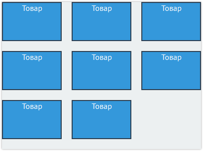

Сетки
Пробуем управлять потоком
Поток — это порядок отображения элементов на странице.
По умолчанию блочные элементы отображаются как прямоугольные области,
идущие друг за другом сверху вниз, а строчные элементы располагаются сверху вниз
и слева направо и при необходимости переносятся на новую строку.
Потоком можно управлять и изменять привычное поведение элементов в потоке.
Например, можно заставить блочные элементы двигаться не сверху вниз, а выстраиваться
в несколько колонок.
А научившись управлять потоком, вы сможете строить сетки.
Наш поток:
.header
.column1
.column2
.column3
.footer
Измененный поток:
.header
.column1
.column2
.column3
.footer
Создадим другой поток
Наш поток:
.header
.column1
.column2
.column3
.footer
Измененный поток:
.header
.column1
.column2
.column3
.block1
Как и позиционирование, float используется для того, чтобы двигать боксы.
.block2
Но в отличие от позиционирования, которым можно двигать боксы практически произвольно, все, что может float — это сдвинуть элемент к одной из сторон потока, правой или левой.
 При этом сам бокс и следующие за ним в потоке приобретают интересное поведение: float'нутый бокс смещается по горизонтали и прилипает к одной из сторон родителя.
При этом сам бокс и следующие за ним в потоке приобретают интересное поведение: float'нутый бокс смещается по горизонтали и прилипает к одной из сторон родителя.
.block1
Короткий текст
Float'нутый бокс перестает раздаваться на всю ширину родительского бокса-контейнера (как это происходит с блоками в потоке). С его неприжатой к родителю свободной стороны появляется свободное место.
.block2
Более длинный текст, занимающий всю ширину страницы
Следующие за ним блочные боксы подтягиваются вверх и занимают его место, как если бы float'нутого бокса в потоке не было.
Строчные же боксы внутри подвинувшихся наверх блоков начинают обтекать float'нутый бокс со свободной стороны.
float и выпадание из потока
Зафлоаченные элементы выпадают из потока, но лишь частично:
- Блочные элементы, которые идут в коде после зафлоаченного блока, перестают его замечать.
Они подтягиваются вверх и занимают его место, как будто его и нет.
- Строчные же элементы, расположенные в коде после зафлоаченного блока, начинают обтекать
его со свободной стороны.
Ещё раз: для блочных элементов флоатные не существуют, но текст внутри блоков флоатные обтекает.
Такое поведение флоатов даёт интересные эффекты:
1. Эффект прохождения сквозь блоки. Проявляется, когда зафлоаченный элемент выше,
чем несколько последующих за ним блоков.
2. Эффект выпадания из родителя или схлопывания родителя. Проявляется тогда, когда все
дочерние блоки в родителе зафлоачены. В этом случае родитель схлопывается по высоте,
как будто в нём нет содержимого, а блоки выпадают из него.
Прохождение сквозь блоки
.block1
Следующие за float'ным блочные боксы подтягиваются вверх и занимают его место, как если бы float'нутого бокса в потоке не было.
Строчные же боксы внутри подвинувшихся наверх блоков начинают обтекать float'нутый бокс со свободной стороны.
Выпадание из родителя
.block2
Первая колонка
.block3
Вторая колонка
Флоат рядом с флоатом
Флоатные элементы становятся невидимыми для блочных элементов и видимыми для текста.
А как же они взаимодействуют друг с другом?
Если вкратце то: флоатные элементы видят друг друга.
Идущие друг за другом флоаты выстраиваются в ряд, пока им хватает свободного места.
Если места не хватает, то они начинают переноситься на следующую строчку. Почти как текст.
Как раз эта особенность флоатов и позволила применять их для создания сеток.
Ведь в начале двухтысячных в CSS не было никакого другого способа создавать колонки и
задавать им размеры.
Блочные элементы всегда располагались в разных строках. А строчные элементы, хоть и
могли располагаться на одной строке, совершенно не воспринимали размеры. Позиционирование
тоже не подходило для сеток, т. к. элементы выпадали из потока.
В общем, флоаты оказались как нельзя кстати для тех, кто решил уходить с табличной вёрстки.
Флоат влево
.block1
.block2
.block3
Флоат вправо
.block4
.block5
.block6
Когда флоатов много, а места мало
Следует отметить, что поведение нескольких флоатов,
когда им не хватает места в одной строке, является очень странным.
Когда не влезающий флоат переносится на новую строку, возможно несколько вариантов
и не все из них логичны. Например, флоат может «зацепиться» за один из предшествующих
флоатов и встать ниже не в самом начале строки, а за предшествующим.
Естественно, эти особенности повлияли на приёмы использования флоатов в создании раскладок (еще одно название для сеток).
Флоат влево
.block1
.block2
.block3
Флоат вправо
.block4
.block5
.block6
Пазл
Свойство clear
Свойство clear запрещает обтекание элемента другими элементами. Вот его значения:
1. left — запрещено обтекание слева;
2. right — запрещено обтекание справа;
3. both — запрещено обтекание с обеих сторон;
4. none — обтекание разрешено.
Если после флоатного элемента расположен элемент с запрещённым обтеканием,
то последний опускается под флоатный.
Свойство clear учит блочные элементы «видеть» зафлоаченные.
Флоат влево
.block1
.block2
.block3
Флоат вправо
.block4
.block5
.block6
Борьба с выпаданием флоатов: распорки
Эффект выпадания флоатов из родителя был большой проблемой при построении сеток.
Ведь сетки на флоатах обычно делаются вот так:
1. Создаём блок-контейнер для колонок.
2. В контейнер добавляем флоатные блоки-колонки.
3. Рассчитываем ширины колонок так, чтобы им хватало места в родителе.
Такой подход работает неплохо. Но проблемы начинаются тогда, когда у контейнера есть фон,
отличный от фона страницы. Когда колонки выпадали, родитель схлопывался и фон пропадал.
Необходимо было найти способ борьбы с выпаданием. Тут и пригодилось свойство clear:both.
Стали применять такую структуру:
<div class="container"> - блок-контейнер
<div class="column1">...</div> - колонка, флоат
<div class="column2">...</div> - колонка, флоат
<div class="clearfix"></div> - распорка с clear:both
</div>
Т. е. начали добавлять после зафлоаченных колонок пустой элемент-распорку со
свойством clear:both. Этот элемент видел колонки, не давал им пройти через себя,
а заодно и растягивал родительский блок по высоте.
Для таких распорок прижилось специальное название класса — clearfix.
Выпадание из родителя
.column1
Первая колонка
.column2
Вторая колонка
Борьба с выпаданием флоатов: псевдораспорки
Хорошие верстальщики не очень любят, когда в вёрстке появляются ненужные дополнительные
элементы и стараются от них избавляться.
До поры до времени с блоками-распорками приходилось мириться, т. к. без них было никак не обойтись.
Но время шло и в браузерах появилась поддержка так называемых псевдоэлементов.
Псевдоэлементы позволяют с помощью CSS вставить в структуру HTML-документа узлы,
которых нет в HTML коде. Т. е. можно вставить в код элемент и не писать его в HTML.
Благодаря псевдоэлементам появилось решение проблемы флоатов без использования
дополнительного элемента.
Назовём это решение псевдораспорками. Есть несколько его вариаций, но вот одна из
распространённых. В CSS добавляется следующее правило:
.clearfix:after{
content:'';
display:table;
clear:both;
}
А затем класс clearfix добавляется к контейнеру, внутри которого лежат флоатные колонки.
После этого в контейнер не нужно добавлять дополнительный элемент-распорку, т. к.
распорка создаётся с помощью псевдоэлемента.
Выпадание из родителя
.column1
Первая колонка
.column2
Вторая колонка
Простейшая сетка
Мы получили ещё один интересный результат. Мы не зафлоатили блок контента,
поэтому он тянется на всю ширину родительского контейнера. А фиксированный маргин слева
предохраняет его от заползания под сайдбар.
Таким образом, у нас получилась сетка из двух колонок, одна из которых фиксированная,
а вторая тянется. Здесь важно следующее — сайдбар в HTML коде должен располагаться до
блока контента, иначе такого эффекта не получится.
У этого способа есть один очень серьезный недостаток. Обратите внимание,
что в исходном HTML блок "sidebar" идет до блока "content" с основным содержимым.
Не нужно думать, что так сделано случайно. Так сделано специально, потому
что иначе этот самый способ с наложением колонки поверх margin'а не работал бы.
Сетка посложнее
Колонка 1
Колонка 2
Колонка 3
Вы научитесь создавать современные веб-интерфейсы, работать с живым кодом,
использовать новейшие технологии.
Минимум скучной теории и максимум практических упражнений,
решение реальных задач и настоящие испытания.
Интересные, наглядные и затягивающие курсы, интерактивные интерфейсы,
достижения — всё для обучения с удовольствием.
Последняя сетка
Блоки с классом layout-positioner добавлены в код. Это невидимые блоки-центровщики.
Теперь хедер и футер могут тянуться на всю ширину окна, а их содержимое будет отцентровано
с помощью добавленных блоков.
Мы задали голубую рамку для центровщиков, чтобы было видно, как они себя ведут.
Также мы добавили им псевдораспорки, поэтому можно удалить класс clearfix из HTML кода.
И еще одна мелочь: класс wrapper уже нигде не используется, поэтому он удалён из CSS.
Класс clearfix мы оставили в CSS, т. к. это вспомогательный класс, который может
пригодиться при вёрстке.
Колонка 1
Колонка 2
Колонка 3
Вы научитесь создавать современные веб-интерфейсы, работать с живым кодом,
использовать новейшие технологии.
Минимум скучной теории и максимум практических упражнений,
решение реальных задач и настоящие испытания.
Интересные, наглядные и затягивающие курсы, интерактивные интерфейсы,
достижения — всё для обучения с удовольствием.
Погружение в inline-block
Блочно-строчные элементы ведут себя двояко. Снаружи они выглядят как обычные строчные,
но внутри они ведут себя как блочные.
От строчных им достались следующие черты:
- по ширине они ужимаются под своё содержимое;
- могут располагаться в одну строку;
- реагируют на вертикальное выравнивание, vertical-align;
- реагируют на горизонтальное выравнивание, text-align, заданное у родителя.
От блочных:
- им можно задавать размеры с помощью width и height;
- а также внешние и внутренние отступы и рамки, которые работают во всех направлениях
и увеличивают размер элемента.
Блок 1
Высота средняя
Блок 2
Высота больше среднего
Блок 2
Низкий
float vs inline-block
Блочно-строчные элементы могут выстраиваться друг за другом, а если не хватает места,
то они переносятся на следующую строку.
Поведение похоже на флоатные элементы, однако, есть существенное отличие.
При переносе на следующую строку блочно-строчные ведут себя намного логичней.
Высота строк у них рассчитывается по максимальному элементу с учётом отступов.
float блоки
Блок 1
Товар с очень-очень длинным описанием
Блок 2
Обычный товар
Блок 3
Обычный товар
Блок 4
Еще один товар с длинным описанием
Блок 5
Обычный товар
Блок 6
Обычный товар
Блок 7
Обычный товар
Блок 8
Обычный товар
inline-block блоки
Блок 1
Товар с очень-очень длинным описанием
Блок 2
Обычный товар
Блок 3
Обычный товар
Блок 4
Еще один товар с длинным описанием
Блок 5
Обычный товар
Блок 6
Обычный товар
Блок 7
Обычный товар
Блок 8
Обычный товар
Простая сетка на inline-block
Блочно-строчные элементы очень часто используют для создания декоративных элементов:
кнопок, плашек, блочков. Также благодаря их умному поведению с их помощью создают
различные списки товаров в каталогах.
Для создания сеток страниц эти элементы используются реже. Первая причина заключается
в том, что их не поддерживают старые браузеры, например, IE7 и младше.
А сетка страницы — слишком критичная вещь, чтобы позволять ей ломаться даже в старых браузерах.
Есть и еще одна проблема. Давайте попробуем
построить сетку, как на картинке, когда у нас края товаров вплотную прилегают к краям контейнера:

Каталог в три колонки
Товар
Товар
Товар
Товар
Товар
Товар
Товар
Товар
inline-block и пробелы в коде
Мы рассчитали всё правильно, однако по три товара в строку не помещается.
Причина заключается в пробелах после тэгов в HTML-коде. Блочно-строчные ведут себя как текст,
поэтому если в коде есть пробел между элементами, то он отображается и на странице.
Этот пробел увеличивает отступы между товарами, не давая им поместиться в одну строку.
Бороться с пробелом после блочно-строчных можно несколькими способами:
- удалять пробелы в коде;
- обнулять размер шрифта;
- играться с маргинами после блочно-строчного.
У каждого из способов есть свои недостатки, а подробнее эти и другие способы разбираются
в переводе хорошей статьи (есть ещё более обширная
статья
про блочно-строчные).
Мы попробуем последние два способа.
Способ со шрифтом заключается в том, что мы задаём нулевой размер шрифта у контейнера
инлайн-блоков, а самим инлайн-блокам задаём исходный размер шрифта. Способ не работает,
если вы используете относительные размеры шрифта.
Способ с маргинами заключается в том, что мы уменьшаем отступ после инлайн-блока
на ширину пробела, около 4px. А если нам нужно, чтобы элементы стояли вплотную друг
к другу, то задаём отрицательный отступ. Проблема с этим способом заключается в том,
что размер пробела может быть разным в разных шрифтах и может изменяться при
изменении размера шрифта.
Способ 1: обнулять размер шрифта
Каталог в три колонки
Товар
Товар
Товар
Товар
Товар
Товар
Товар
Товар
Способ 2: играться с маргинами после блочно-строчного
Каталог в три колонки
Товар
Товар
Товар
Товар
Товар
Товар
Товар
Товар